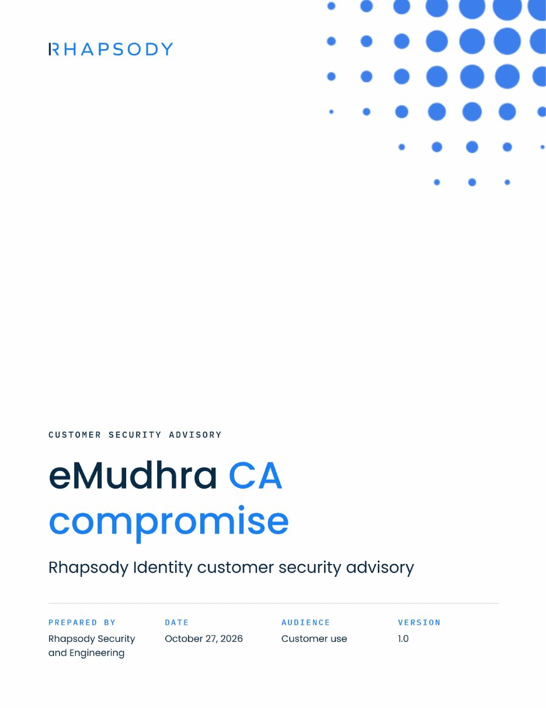
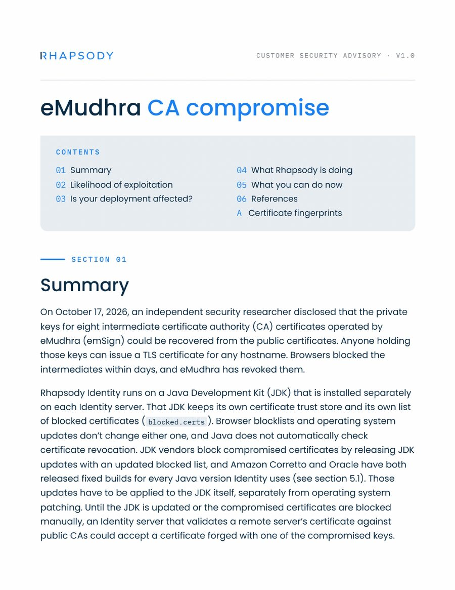
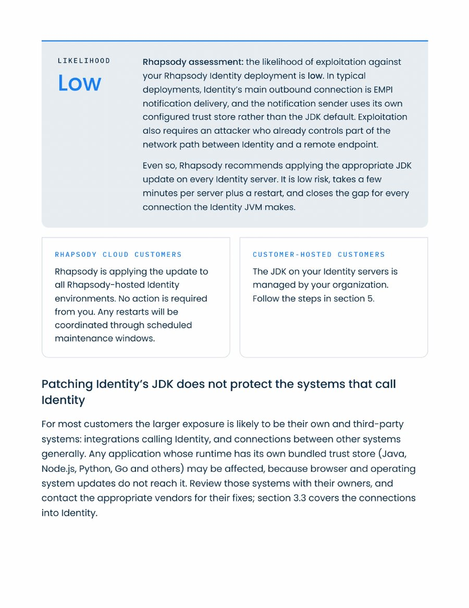
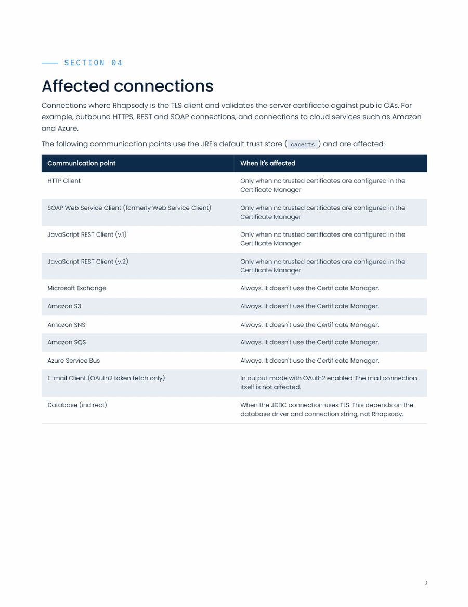
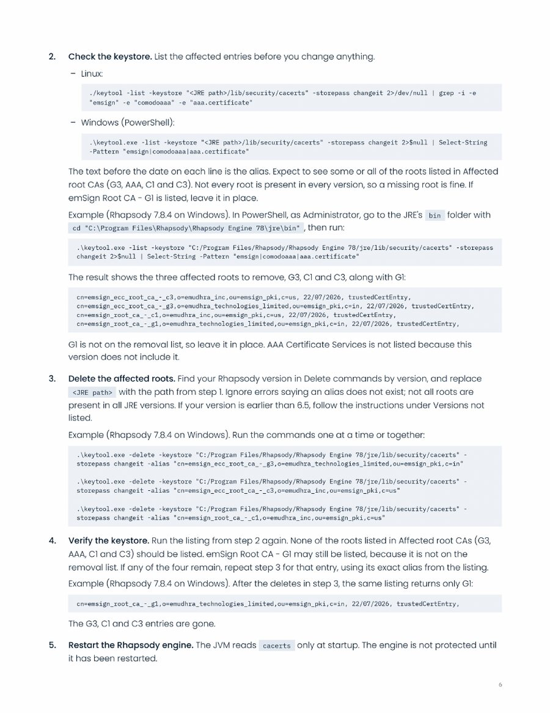

White papers, release notes, and customer security advisories share one document system. It’s built from two approved Rhapsody customer security advisories (eMudhra CA compromise, Rhapsody Engine and Rhapsody Identity, October and November 2026), which are the reference examples. When Claude creates any of these documents, it follows this card.





Reference examples (full PDFs): examples/technical-documents/ in the design system repository.
Start every new document from a template. All three share the same styles, so content moves between them cleanly.
| Template | Eyebrow | Section skeleton |
|---|---|---|
Rhapsody-Security-Advisory-Template.dotx | Customer security advisory | Summary (with the likelihood panel and audience cards), Likelihood of exploitation, Is your deployment affected?, What Rhapsody is doing, What you can do now, FAQ, References, Appendix |
Rhapsody-Release-Notes-Template.dotx | Release notes | Highlights, New features, Improvements, Fixed issues, Known issues, Upgrade notes, Compatibility, References |
Rhapsody-White-Paper-Template.dotx | White paper | Executive summary (with a key-figure panel), The challenge, The approach, What it delivers, Getting started, References |
The templates are in templates/word-documents/ in the design system repository, and in Word under File > New once they’re added to Rhapsody’s Microsoft templates. Every element is a named Word style (Eyebrow, Document Title, Section Label, Callout, Code Block, Panel Label, Table Header, Lead-in, Code Inline, Accent), so apply styles rather than formatting by hand. Install Poppins and IBM Plex Mono (free from Google Fonts) before you use them.
| Element | Treatment | Use for |
|---|---|---|
| Callout | Gray-blue fill, 3pt Rhapsody Blue left rule, Medium lead-in (“Important:”, “Note:”, “Caution:”) | Status, cautions, prerequisites |
| Assessment panel | Gray-blue fill, Rhapsody Blue top rule; mono label and a large Medium value in Rhapsody Blue at left, the reasoning at right | A rating (Likelihood: Low) or one key figure |
| Warning panel | Gray-blue fill, navy top rule, mono label (“What not to do”, “Changed defaults”) | Unsafe workarounds, behavior changes |
| Audience cards | Two outlined cards side by side, light-gray hairline, blue mono label | Rhapsody Cloud vs customer-hosted actions |
| Data table | Navy header with white Medium text, alternating white and gray-blue rows, hairline under the last row; first column often Medium | Connections, versions, fixed issues |
| Key-value table | No header; hairline rules; Medium left column | Who does what (customer type → action) |
| Code | IBM Plex Mono on gray-blue: blocks for commands (an optional gray mono label such as WINDOWS or LINUX), inline chips for file names, settings, and values | Anything a reader types or searches for |
| Lists and links | Round bullets; numbered steps with a Medium lead-in; links in Rhapsody Blue, underlined | Conditions, procedures, references |
rhapsody-brand.The two reference advisories differ in small ways. The system uses round bullets (not dashes), underlined links, an open contents list instead of a boxed one, a running header and page numbers on every page after the cover, and the cover dots in Rhapsody Blue (the white-ground fluid dot master is #3D7FED, so the templates redraw its dots in #1A81F4).